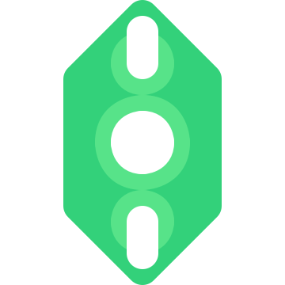

mOSs

mOSs is a custom Linux distribution project derived from Ubuntu and inspired by Kubuntu, SteamOS, and Bazzite. The longer-term aim is an installable system with desktop, gaming, and mobile-oriented variants. The active public implementation is currently the ubuntu-decK project: a set of scripts and packaging for adding a SteamOS-style gaming session to Kubuntu rather than a finished standalone distribution image.
Project roadmap and current deliverable
- Base system
- Ubuntu / Kubuntu with KDE Plasma in the current installer
- Current deliverable
- SteamOS-style Game Mode session setup for an existing Kubuntu installation
- Game session
- Gamescope fullscreen session running Steam's gamepad UI
- Display target
- Launcher currently specifies 1920 × 1080; comments describe adjusting it for the target monitor
- Session manager
- SDDM login session and AccountsService default-session integration
- Planned variants
- Conventional desktop and mobile options are part of the broader mOSs goal
Game Mode installation
The ubuntu-decK setup script installs Steam, MangoHud, Gamescope, SDDM, AccountsService, and Mesa utilities through APT. It writes a Gamescope session launcher and a Wayland session entry so Game Mode appears alongside Plasma at login. The launcher runs Gamescope fullscreen and starts Steam using its gamepad UI mode.
The script also creates session-switching helpers and a Plasma desktop shortcut. A user can choose to boot directly into Game Mode; otherwise the regular login screen remains available. The switch command changes the default session and coordinates the end of the current desktop or Gamescope session so the login manager can start the selected mode.
System integration and configuration
This project operates at the installed-system level: it adds packages, session files, helper commands, sudoers entries, and SDDM configuration. The Gamescope launcher currently specifies a 1920 × 1080 target, and its own comments note that this should match the user's display. The source also contains logic for choosing the default session and optionally enabling automatic login into Game Mode.
These details distinguish the current work from a custom kernel or a complete image builder. The public mOSs README describes a future ISO and installer, while the current active code is focused on configuring an existing Kubuntu desktop.
Experimental status and limitations
The ubuntu-decK README explicitly calls the installer very experimental and warns that there is currently no way to reverse it. Although the script has session-switching and autologin-disable logic, the repository does not provide a complete system uninstaller that restores every installed package and changed configuration. Treat it as a test-machine project, inspect the script before use, and keep a recovery plan.
The public repositories do not yet document a released mOSs ISO or working mobile variant. Those remain goals rather than current features.